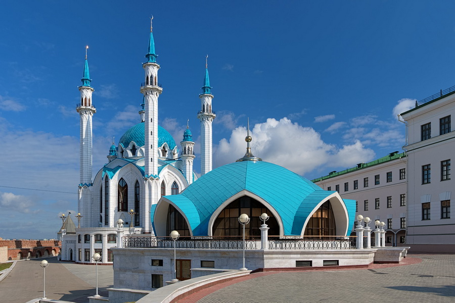
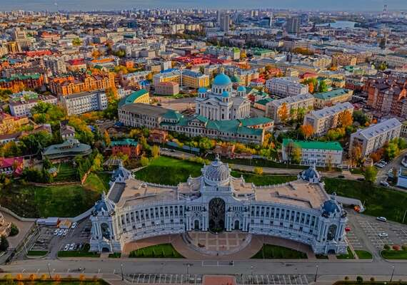
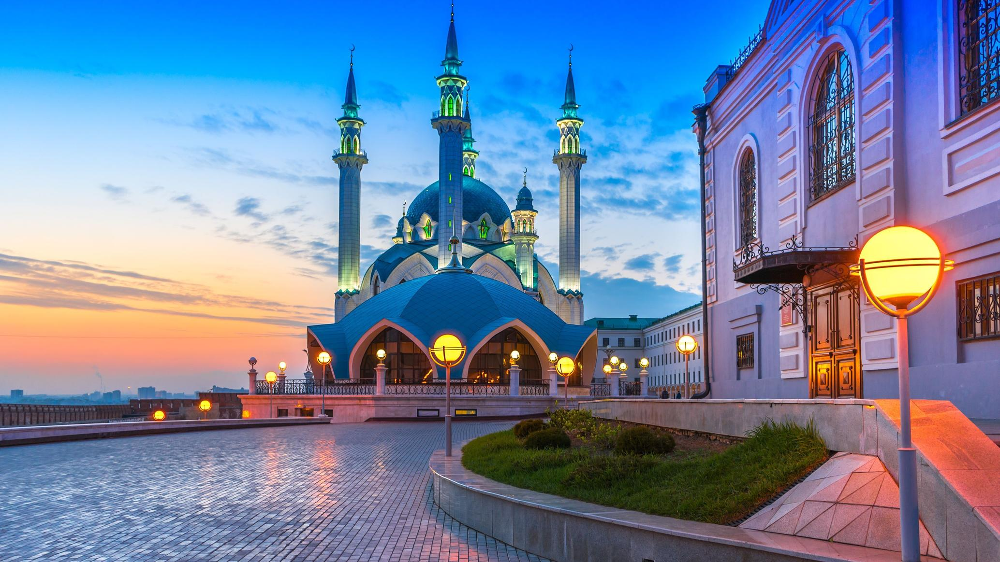
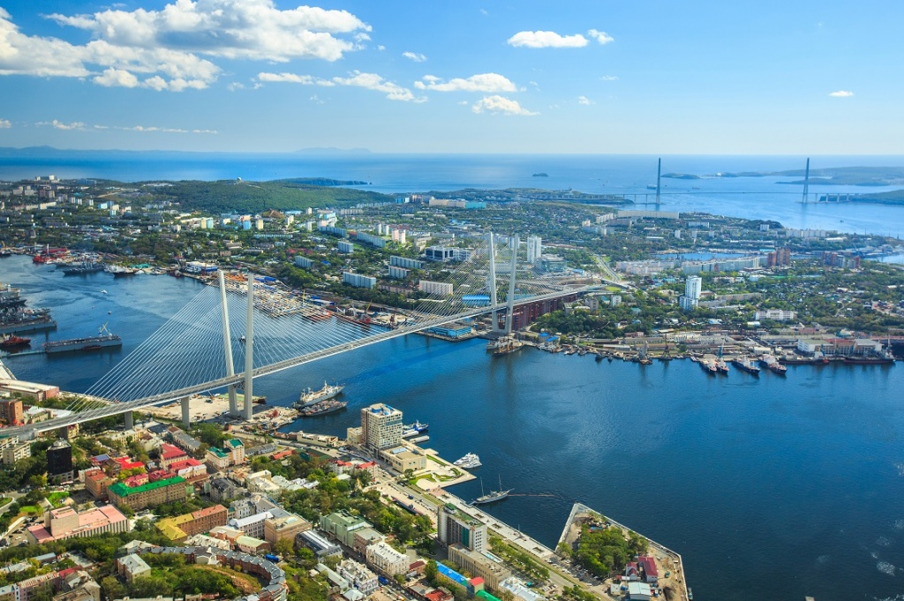

Russia Travel Guide
Discover the most beautiful cities in Russia! History, architecture, and unforgettable places.
1. Moscow
Moscow is the capital of Russia and one of the country's most famous cities. It combines historic architecture, modern skyscrapers, museums, and parks.
What to see: Red Square, the Moscow Kremlin, and Zaryadye Park.
Official Moscow Website


2. Saint Petersburg
Saint Petersburg is the cultural capital of Russia, famous for its canals, bridges, palaces, and rich history. The city is especially beautiful during the White Nights.
What to see: the Hermitage Museum, Peter and Paul Fortress, and the Church of the Savior on Spilled Blood.
Official City Website


3. Kazan
Kazan is the capital of Tatarstan, a city with a unique blend of Tatar and Russian cultures. Ancient landmarks stand alongside modern architectural structures.
What to see: the Kazan Kremlin, Kul Sharif Mosque, and Bauman Street.
Official Kazan Website


4. Arkhangelsk
Arkhangelsk is a northern city on the banks of the Northern Dvina River. It is known for its maritime traditions, wooden architecture, and proximity to the rugged beauty of the Arctic.
What to see: the Northern Dvina riverfront, the Malye Korely Museum of Wooden Architecture, and the Gostiny Dvor.
Official Arkhangelsk Website


5. Vladivostok
Vladivostok is a port city in the Russian Far East, located on the coast of the Sea of Japan. It is known for its picturesque bays, bridges, and beautiful sea views.
What to see: the Russky Bridge, Russky Island, and Tsesarevich Embankment.
Official Vladivostok Website


Travel Across Russia!
Every city is unique. Choose your destination, discover new places, and create unforgettable memories.